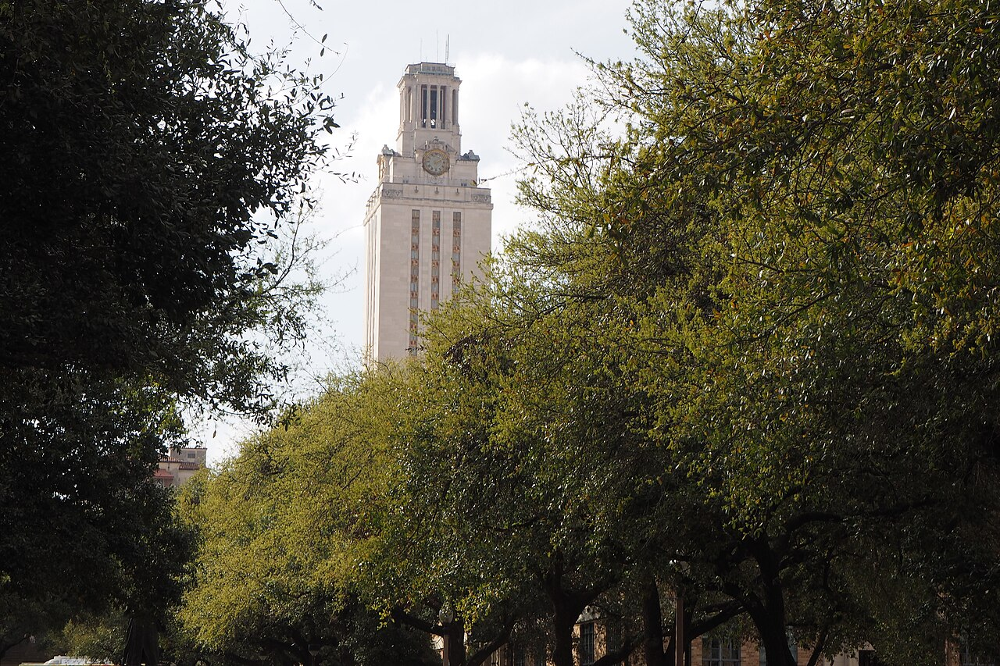

The Story
This chapter is waiting for its story.
Chapter 24 of 28 · 2024 – 2025 · McCombs School of Business, UT Austin
Regions Bank, and the AI/ML program at Texas McCombs.
What was happening while this chapter was being lived.

McCombs School of Business, UT Austin View larger map © OpenStreetMap contributors
Personal pictures from this chapter — to be added.
This chapter is waiting for its story.